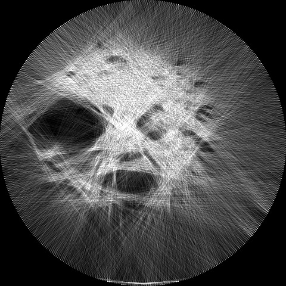
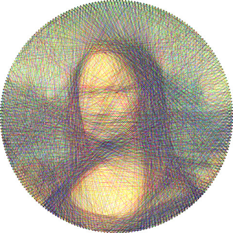
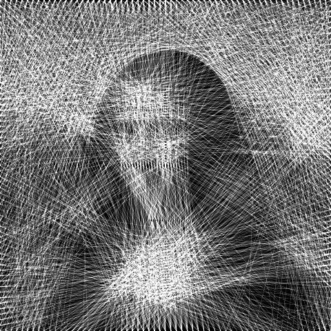

Make yours
Pick a clip, pick a look, press Thread it. The sample is already running.
From 300 lines to a face
The first lines carve out the darkest masses. The face only settles once the thread has nowhere large left to go.
Other looks



How it works
A string artist has only one move: run the thread from the peg they are at to some other peg, in a straight line. threadreel plays that game greedily. It keeps a small copy of the frame in which every pixel records how much darker it still needs to be. From the current peg it considers every other peg, averages the remaining darkness along each possible line, and goes to the peg whose line crosses the most of it. Then it subtracts the thread's weight along that line and asks again.
Lines must be straight and must end on pegs, so the thread cannot trace an outline. It crosses the whole frame every time, and the picture emerges from where the crossings pile up: dense in the shadows, sparse in the light. That is also why a circle works so well. Every chord of a circle passes through the middle, where the subject usually is.
When it stops, and how video stays fast
The search knows when to stop. A line whose average remaining darkness is less than half the thread's weight would make the frame worse, so once no such line is left the frame is finished. Bright frames use fewer lines, dark ones more; the slider for lines is only a ceiling. Opacity and thickness set how heavy each pass of thread is, and so how many passes a frame needs.
A video is many frames, so each one is solved on its own, spread across every core of your machine in Web Workers. The lines between pegs are rasterised once and shared by all frames of a clip, which leaves each step with nothing to do but sum a few hundred short lists of pixels. Frames come out as geometry, a list of peg numbers per thread, and are drawn again at any size for playback, for a PNG or SVG, or for the video file, which is encoded in the browser with WebCodecs. Nothing is uploaded.
For developers
The same engine runs as a Node command line tool and as a library. It is not on npm yet: install it from GitHub. Node 18 or newer; ffmpeg on the PATH for video files.
git clone https://github.com/sankshitpandoh/threadreel
cd threadreel && npm install && npm link
threadreel -i clip.mp4 -o clip-threads.mp4
threadreel -i photo.jpg -o photo.svgthreadreel -i photo.jpg -o photo.mp4 -intro 8 -hold 3Give a picture and ask for a video: the thread is laid down one line at a time, then held.
npm install github:sankshitpandoh/threadreelOr, after npm link in the clone above, run npm link threadreel in your project.
import { Threader, rasterize, toSVG } from 'threadreel';
const threader = new Threader({ shape: 'circle', pegs: 240 });
const result = threader.solve(imageData); // { width, height, data }
const png = rasterize(result, { width: 1080 });
const svg = toSVG(result, { width: 1080 });import { Threader, drawResult } from 'threadreel';
const threader = new Threader({ pegs: 240, background: 'black' });
threader.load(imageData); // any { width, height, data }
function draw() {
for (let i = 0; i < 20; i++) threader.step(); // 20 more lines per frame
drawResult(drawingContext, threader.result(), { width });
}step() returns false once the frame is finished. The full API, including
toInstructions for a printable stringing list, is in
src/index.js.
| Flag | Default | What it does |
|---|---|---|
-i path | required | A picture (PNG, JPEG) or any video ffmpeg can read. |
-o path | required | Where to write it, by extension: .mp4 .webm .gif for video, .png .jpg .svg for one frame, .txt for stringing instructions, %04d.png for every frame. Repeatable. |
-shape s | circle | circle (square crop), ellipse or rectangle. |
-p n | 240 | Pegs around the frame. |
-n n | 2500 | Most lines per frame; the search usually stops earlier by itself. |
-mode m | mono | mono for one thread, color for cyan, magenta and yellow (red, green and blue on black). |
-bg b | white | white with a dark thread, or black with a light one. |
-opacity x | 0.3 | How much one pass of thread covers, 0 to 1. |
-thickness x | 1 | Thread width in thousandths of the frame. |
-q px | 128 | Working resolution for the search. |
-s px | 1080 | Output size, longer side. |
-fps n | 12 | Frames per second to take from the video. |
-t sec | all | Use only the first sec seconds. |
-intro sec | 0 (6 for a still) | Draw the first frame in, one line at a time. |
-hold sec | 0 (2 for a still) | Hold the last frame at the end. |
-all-lines | off | Always lay down all -n lines instead of stopping when they stop helping. |
-pegs-visible | off | Draw the pegs. |
-j n | all cores | Worker threads. |
-seed n | random | Fix the random tie-breaks to repeat a result exactly. |
-v | off | Report progress. |